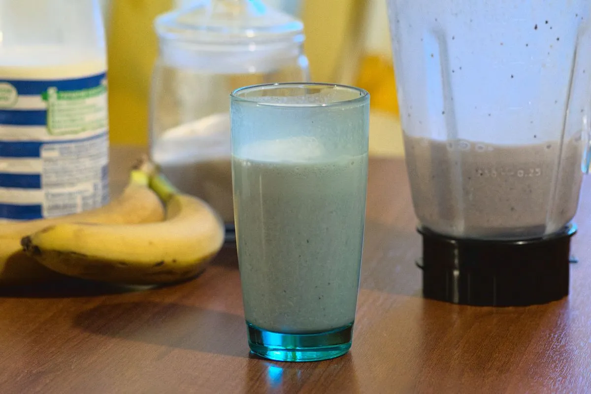

Sunday Morning Milkshake

A sweet and refreshing milkshake that barely requires any effort to make. You’re not required to make it and drink it on Sunday, it was just almost a tradition in my family to make it on the weekends, and it somehow does taste better on a Saturday or Sunday morning.
Ingredients
These are for about 4 glasses or 1 liter:
- 1 banana (or 2 if they are small)
- ~120 grams of berries. Can be any berries you like.
- <1 liter of milk
- Vanilla
- Sugar
Directions
- Chop the banana so that it fits better in the blender.
- Add the banana pieces, berries, vanilla and sugar to taste to the blender. Usually I use about 6 tea spoons of sugar.
- Pour enough milk so that the mix fills a liter of the blender volume.
- Blend it until the mix looks somewhat homogeneous.
- Pour it and enjoy!
Basically anything is better consumed fresh, but it is especially the case for this milkshake recipe. If you leave it sitting for more than 10-15 minutes it won’t be so delicious anymore.
Originally published at https://www.yaroslavps.com/food/sunday-morning-milkshake/
Contribution
- Yaroslav de la Peña Smirnov Рwebsite, other website, donate
Recipe tags: sweet, breakfast, drink, cheesefare